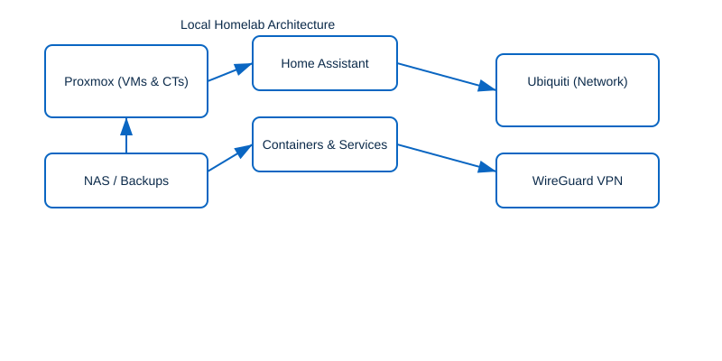

🏠 Homelab — Proxmox + Ubiquiti
I run a resilient homelab using Proxmox to host VMs/containers and Ubiquiti for networking. Key components: Home Assistant, containerized services, NAS backups, and WireGuard for secure remote access.

Key details
- Virtualization: Proxmox VE (KVM + LXC)
- Networking: Ubiquiti UniFi for routing/switching/Wi‑Fi
- Services: Home Assistant, relay services in containers, reverse proxy
- Remote access: WireGuard with strict firewall rules
Sample WireGuard peer config (redacted)
[Interface]
Address = <peer-vpn-address>/32
PrivateKey = <private-key>
[Peer]
PublicKey = <server-public-key>
Endpoint = yourdomain.example:51820
AllowedIPs = 0.0.0.0/0
PersistentKeepalive = 25
🎧 EarDeck
A free, lightweight AirPods app for Windows with battery levels, one-click connect, and easy pairing, built in Rust.
- Runs without admin rights, installs no drivers, and sends no data anywhere
- Threat modeled against someone nearby, since any Bluetooth device can broadcast anything
- Bluetooth parser tested against 200,000 random packets
cargo auditruns on every change and weekly, with Dependabot proposing updates
🔄 UpdateAll
A free Windows desktop app that scans for outdated software and lets you update everything in one click — OS patches, installed apps (via winget), npm/pip global packages, and hardware drivers.
- Modern dark UI with live progress tracking and real-time logs
- Covers Windows Updates, winget apps, Node.js/Python packages, and GPU/audio/network drivers
- Fully local — no accounts, no telemetry, no external calls beyond the updates themselves
- Requires Python 3.8+ and admin access for system/driver updates
🧪 MATTY
MATTY CLI Assistant — a shell-based assistant that automates common command-line workflows.
🔗 View on GitHub🐍 Banking API GUI (ShellHacks)
Built at the ShellHacks hackathon: a Python GUI that uses Capital One APIs to manage financial data.
🔗 View on GitHub🏆 Hackathons
Competed in AR/VR, cybersecurity, and machine learning/AI hackathons, building working prototypes under tight deadlines.
🌐 Old Website
An archived version of my personal website, showcasing earlier web development work.
🔗 View on GitHub💧 Water Quality Prediction
Implemented a machine learning model to predict water quality based on various parameters.
🔗 View on GitHub